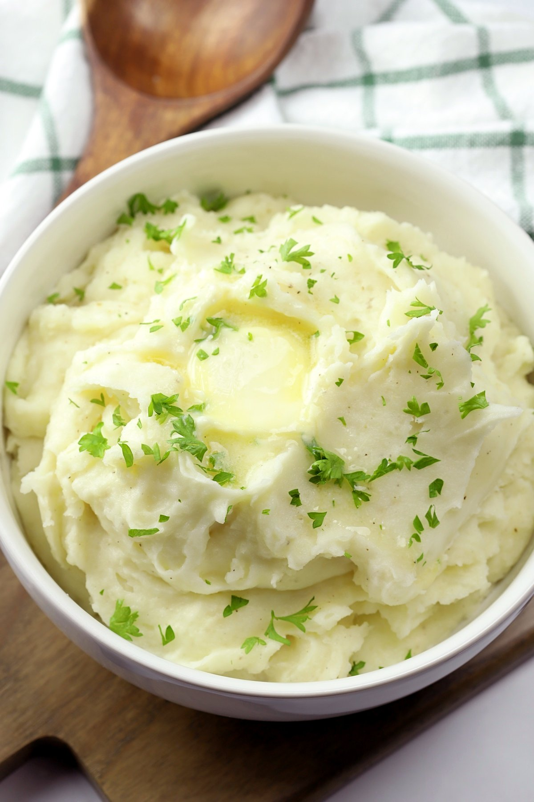

Creamy Mashed Potato Recipe

Description
Mashed Potato is another example of the many
things you can make out potatoes. It is said to have originated from
England in the 1600s, but the also French claim to have invented
it in the 1770s. My creamy mashed potato recipe is quick, easy
and is a classic take on mashed potato.
Ingredients (feeds 2)
- New potatoes (500g)
- Butter (100g)
- Milk (40ml)
- Table salt (4 tbsp)
- Chives, or whatever herbs you have to hand (optional)
Steps
- The first thing to do is to peel the potatoes.
I'd would reccomend only half peeling them, so you still
get some crunchy and vitamin packed skin in the mash.
If you just want consistency and smoothness, feel free
to fully peel the potatoes. If not, half peel them.
- Next, put the potatoes on a boil in a saucepan for 30 minutes
at gas mark 5. Make sure to use a lid to cook them quicker and more
thoroughly. When the potatoes are ready, make sure they are good to
mash by just pressing down on a single potato and making sure
it is mashable. It is far better to overcook them then undercook.
- After draining the potatoes in a colander, put them in a mixing
bowl and add the 100g of butter. Mash the potatoes and butter together,
and when at a fluffy consistency add the milk and mix it
in. Make sure to mash them for a while to ensure that creamy
consistency.
- Lastly, add the table salt in a mix it well. Add herbs of your choice
and your dish is finished. Quick, easy and tasty!